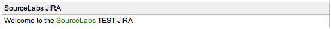
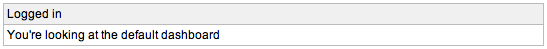

Created by Henri Yandell at SourceLabs, Inc..
Released under the Apache License 2.0 and Copyright 2007 SourceLabs, Inc.
The Apache JIRAs need to show one message to non-logged in users and one message to logged in users. This is an improved HTML portlet that lets you do that - it also lets you use the JIRA introduction. In addition, the JIRA title, or a customised title, may be shown.
Version 1.0 was released on 19th of April 2007.
Install the plugin by downloading the plugin jar, place it in your $JIRA/WEB-INF/lib/ and giving your JIRA a restart.
Once it's installed you can add it to your dashboard by selecting the Improved HTML portlet. Please follow the instructions from Atlassian for configuring your personal dashboard or the default dashboard.
The source is available for perusing by downloading the source zip and unpacking.
Please mail these to me at henri-at-sourcelabs.com, or add them as comments to the JIRA plugin page.
Anonymous users being shown the JIRA title and introduction.
Logged in users being shown a custom title and text. The title is optional in both cases.
